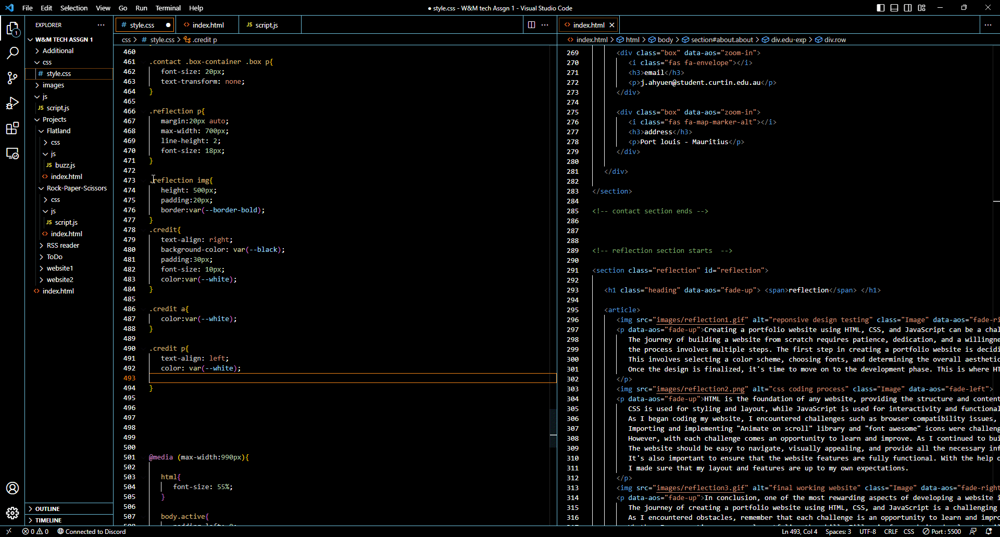

biography
Throughout my academic journey, I have gained valuable skills in data analysis, systems analysis, and project management,
which I am eager to apply in real-world settings. I am a curious and driven individual who enjoys exploring the latest trends and innovations in the tech industry,
and I am always looking for opportunities to learn and grow both personally and professionally.
Apart from my academic pursuits,
I am an avid reader and enjoy keeping up with news and trends in the technology world.
I also love to stay active and enjoy playing sports such as badminton and trail running.
I am excited about the opportunities that lie ahead and am looking forward to connecting with like-minded individuals in the industry.
name : Jaden Oliver Ryan Ah Yuen
email : j.ahyuen@student.curtin.edu.au
address : Port Louis, Mauritius
phone : +230 5768 6295
age : 21 years
download CV
skills
Python75%
HTML85%
CSS80%
JavaScript65%
Microsoft PowerApps90%
Microsoft PowerAutomate90%
Microsoft PowerBI85%
education & experience
education
( 2021 - 2024 )
Bcom Business Information Technology & Systems
Curtin Mauritius
( 2019 - 2021 )
Higher School Certificate
Rabindranath Tagore Secondary School - Art & Design , Economics , Accounting , French , General Paper
( 2017 - 2018 )
School certificate
Rabindranath Tagore Secondary School - Ecomomics, Accounting, Art & Design, English, French, Mathematics
experience
( 2021 - 2022 )
Esports Tournament Moderator
Esports faction Ltd - Managing participant correspondence & support
Monitoring the point system using spreadsheet
( 2022 - Current )
Production Crew
Esports Faction Ltd - Managing live broadcast of gaming Tournaments using broadcasting tools and a minimum of coding
( 2023 )
full-stack developer
Gamma Materials ltd - Implementing new reporting system in the company using Powerapps and Power automate.
reflection

Creating a portfolio website using HTML, CSS, and JavaScript can be a challenging but rewarding experience.
The journey of building a website from scratch requires patience, dedication, and a willingness to learn. From the initial planning phase to the final launch,
the process involves multiple steps. The first step in creating a portfolio website is deciding on the design and layout.
This involves selecting a color scheme, choosing fonts, and determining the overall aesthetic of the site.
Once the design is finalized, it's time to move on to the development phase. This is where HTML, CSS, and JavaScript come into play.

HTML is the foundation of any website, providing the structure and content.
CSS is used for styling and layout, while JavaScript is used for interactivity and functionality.
As I began coding my website, I encountered challenges such as browser compatibility issues, responsive design, and debugging errors in the code.
Importing and implementing "Animate on scroll" library and "font awesome" icons were challenging to initially implement them.
However, with each challenge comes an opportunity to learn and improve. As I continued to build and refine my website, it was important to keep the end user in mind.
The website should be easy to navigate, visually appealing, and provide all the necessary information about my skills and experience.
It's also important to ensure that the website features are fully functional. With the help of blog posts and websites,
I made sure that my layout and features are up to my own expectations.

In conclusion, one of the most rewarding aspects of developing a website is seeing my ideas come to life.
The journey of creating a portfolio website using HTML, CSS, and JavaScript is a challenging but rewarding experience.
As I encountered obstacles, I considered that each challenge is an opportunity to learn and improve.
Whether I am creating a personal portfolio, the skills I'll gain from website development will serve me well in my future projects.